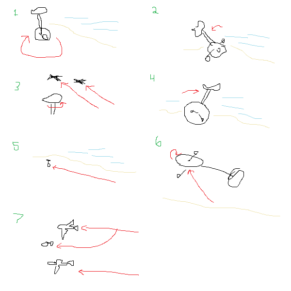
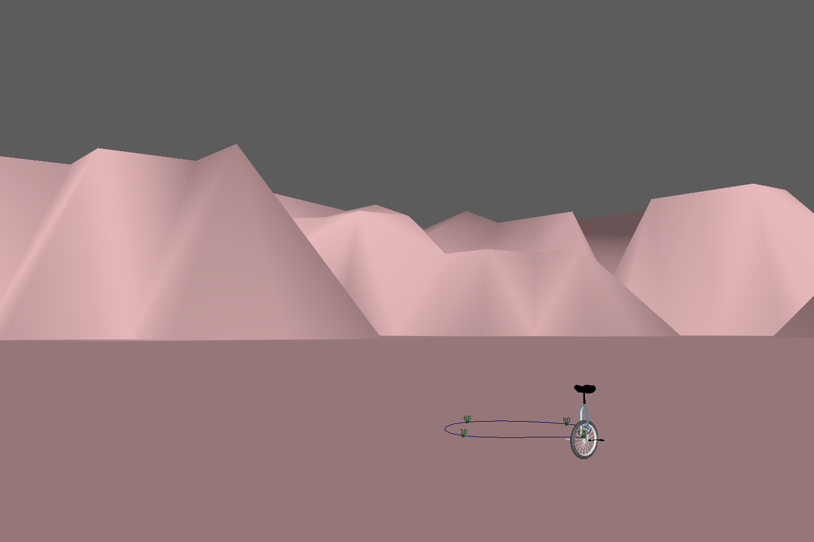
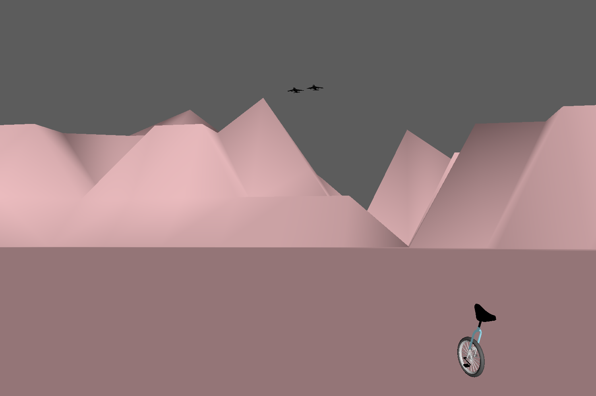
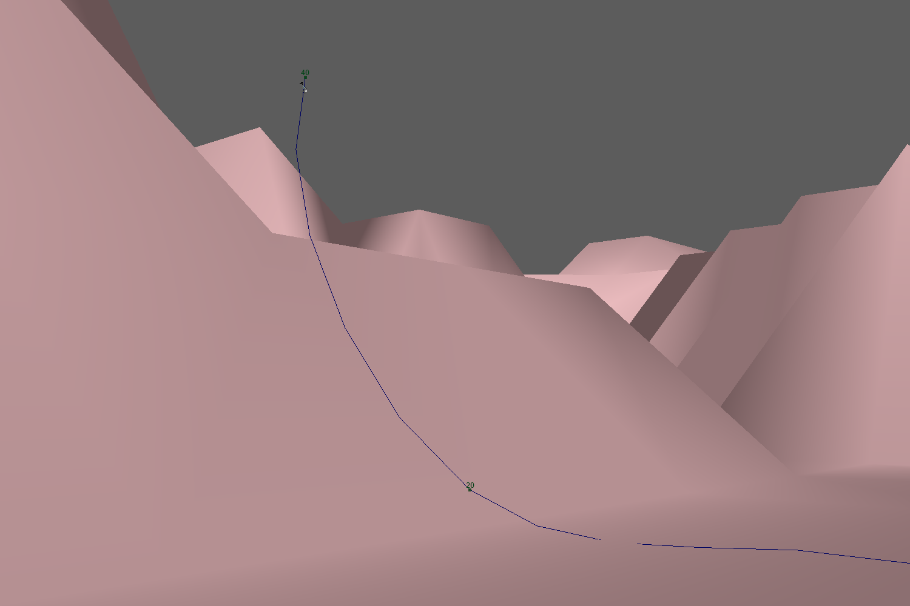

Computer Animation
Spring 2017
Due 3/23/2017
My animation is about a determined unicycle which decides it can compete with jet airplanes. The storyboard below lays out my initial plan for the animation, but I made some changes for better aesthetics and for funnier shots.
I initially planned to set the animation near a large body of water, but I decided to go with weird and clearly low polygon count mountains after becoming dissatisfied with the way my water looked. The animation begins with the unicycle going in a circle until it hears jets nearby. The jets fly fast and low over the unicycle. I hadn't planned to make the unicycle spin as the jets flew by, but I incorporated that movement into the animation after making it happen by accident. The unicycle then goes very fast through the landscape. In my storyboard, I had planned for the unicycle to become airborne by turning its wheel and using it as a propeller, but I decided that a quick shot where it launched up the mountain was funnier and a bit easier, particularly for the camera. The unicycle then makes it to the jets and flys with them.
I used several of Disney's principles of animation in my project. The first of these was anticipation; when the unicycle moves slowly in a circle and there's the faint sound of jets in the distance, it's a sign something is going to happen. I also used anticipation when I made the unicycle lean back before its sprint to the sky.
I used staging in many of my shots. I made sure to compose each shot so that the unicycle moves through a majority of the frame, and there isn't conspicuously dead space. The shot below is an example of staging; the jets move through one discreet part of the scene as the unicycle occupies a corner.
Lastly, I used exaggeration by giving the unicycle lots of speed and the ability to jump incredibly high. These shots go by so quickly that it's easy to accept this crazy movement, and if it hadn't been as exaggerated, the animation likely would have been less exciting.
I had a lot of fun with this animation. I really enjoyed giving this animation a vaporwave color palette, and I get a kick out of everyone's reactions to this project.